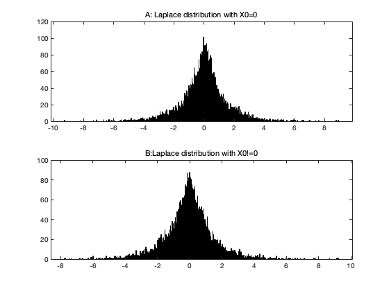

N = 10^4;
N = 10^4;
X0 = 0;
b = 1;
X_rest = laprnd(N-1, 1, 0, b);
Xk = [X0;X_rest];
mean_Xk = mean(Xk);
var_Xk = var(Xk);
disp(['Mean of Xk for partA: ', num2str(mean_Xk)]);
disp(['Variance of Xk for partA: ', num2str(var_Xk)]);
figure
subplot(2,1,1)
histogram(Xk, 1000)
title('A: Laplace distribution with X0=0')
b = 1;
Xk = laprnd(N, 1, 0, b);
mean_Xk = mean(Xk);
var_Xk = var(Xk);
disp(['Mean of Xk for PartB: ', num2str(mean_Xk)]);
disp(['Variance of Xk for PartB: ', num2str(var_Xk)]);
subplot(2,1,2)
histogram(Xk, 1000)
title('B:Laplace distribution with X0!=0')
function samples = laprnd(N, M, mu, b)
u = rand(N, M) - 0.5;
samples = mu - b * sign(u) .* log(1 - 2 * abs(u));
end
Mean of Xk for partA: 0.002218
Variance of Xk for partA: 2.0164
Mean of Xk for PartB: -0.026548
Variance of Xk for PartB: 2.0524
